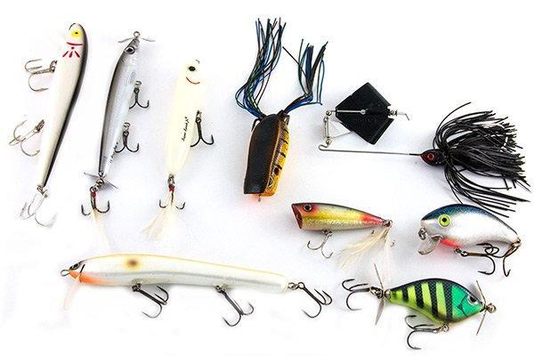
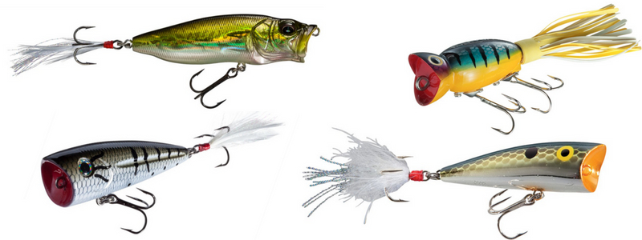
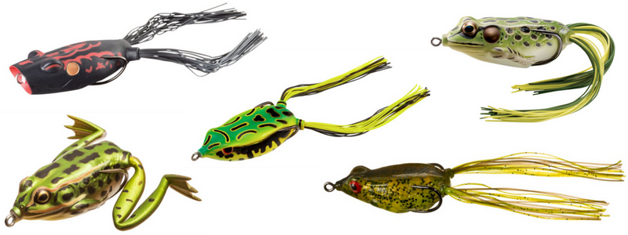

Topwater
Topwater refers to floating lures worked on the top of the water (woah, who would've guessed?). These can include spooks and various walkers, poppers, frogs, propbaits, and buzzbaits. Topwater lures usually imitate fish, frogs, or insects struggling on the water surface (more fun lures imitate bats, snakes, lizards, spiders, and birds ). Based on my experience and success with local ponds, I'll just focus on poppers and frogs.
Poppers
Poppers are usually constructed of wood or plastic (internal rattles), and have 2 treble hooks. The concave face of the lure allows it to pop and spit water, resembling fleeing prey. I cast them parallel to banks and work them with a random cadence of pops and pauses. Oftentimes the bait is taken on a pause. My personal favorite is the rebel crickhopper popper, which imitates a grasshopper or cricket. It's relatively small size doesn't spook fish. Poppers are great from late spring to early fall. Color selection isn't the biggest deal- if water is slightly murky, a brighter color might be more beneficial.
Frogs
I'd have every bass fisherman in America would be looking for my head if I didn't include the hollow-bodied frog on this list. Frogs are constructed of some durable rubber/plastic with a hollow inside. A hook point runs down each side of the frog, with the barbs pointing forward. Rubber strands trail behind the frog, imitating legs. It's a truly snagless design. I work them similarly to a popper, but will cast frogs in the thickest vegetation on the surface - they can't get stuck. Only thing I've found is that bass in the ponds I fish tend to be skittish around frogs, but YMMV. Frogs excel in warmer weather. Again, for colors it's not the biggest deal. If bass are active enough to snatch prey on the surface, color selection shouldn't spook them. A general frog pattern and a black or white frog will do you good.